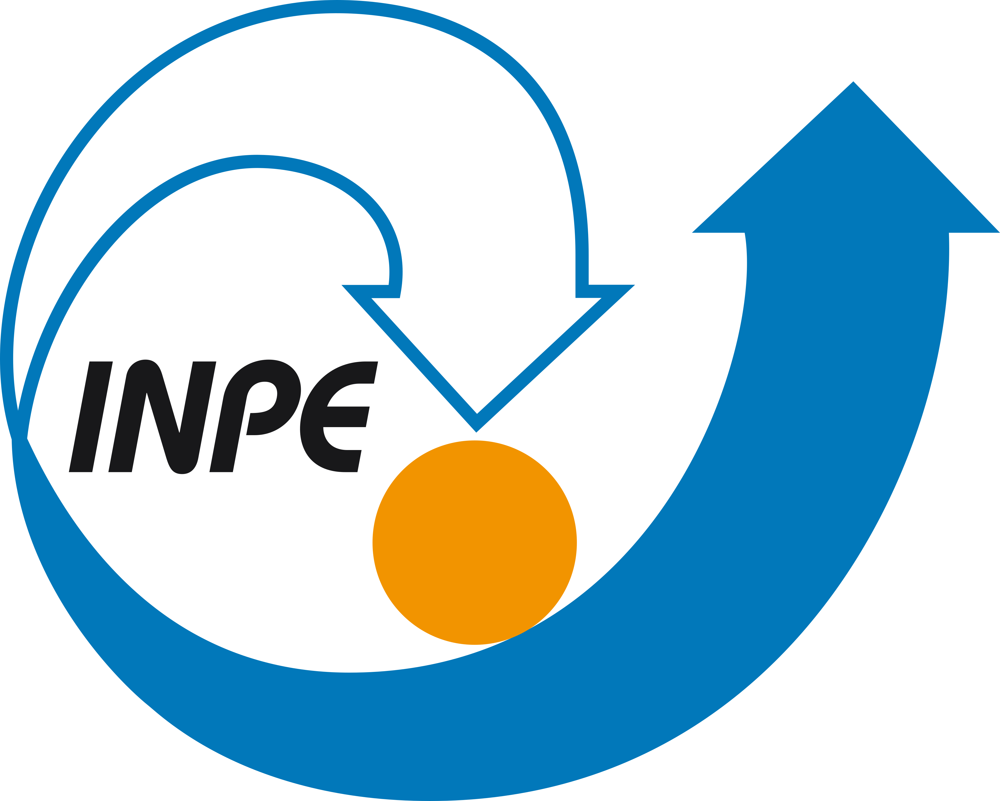
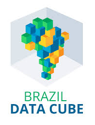

O INPE atua em pesquisas espaciais, satélites e monitoramento ambiental.
A CAPES promove a pós-graduação e oferece bolsas de estudo no Brasil e Exterior.

O Brazil Data Cube organiza imagens de satélite em cubos de dados para monitoramento ambiental.
O CNPq fomenta a pesquisa científica e apoia pesquisadores com bolsas e projetos.
A FAPESP financia projetos de pesquisa e inovação no Estado de São Paulo.
A Conab gerencia políticas de abastecimento e segurança alimentar no Brasil.